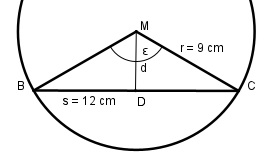

Aufgabe 55 Wie groß sind der Mittelpunktswinkel ε und der Abstand d der Sehne s vom Mittelpunkt?

Im Dreieck DCM: s/2 12/2 cm sin ε/2 = ----- = ----------- = 0,6667 r 9 cm --> ε/2 = 41,8° --> ε = 83,6° d cos ε/2 = --- |*r r d = r * cos ε/2 = 9 cm * 0,7455 = 6,7 cm